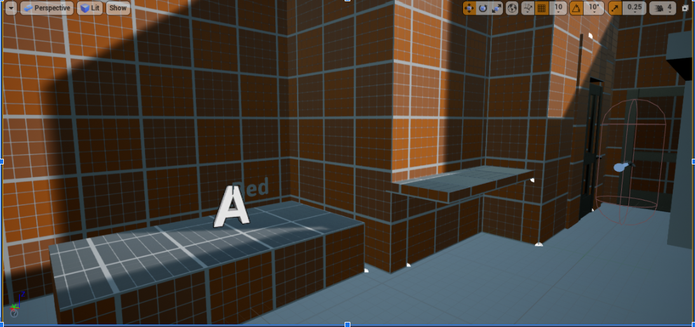
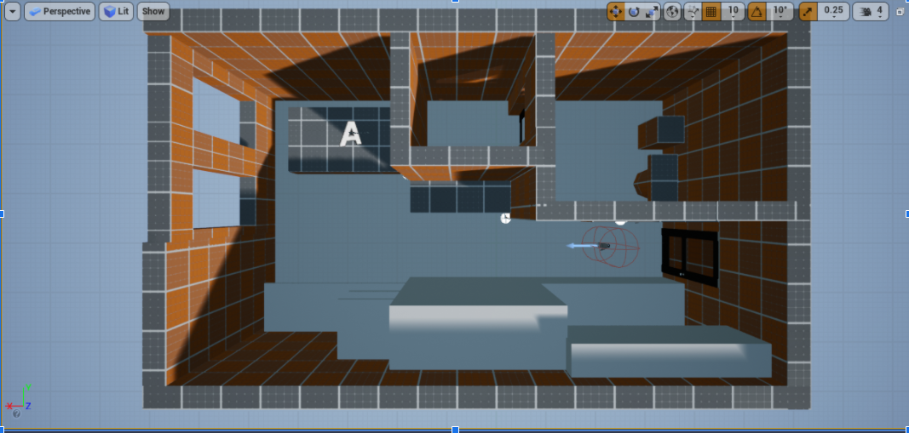

During this phase of the project, the VR team completed the necessary tasks to produce the INITIAL DRAFT of the project. The expected deliverable was a block out of the location with all the necessary props and layout completed. Reference images were also gathered
for the modeler to take inspiration from so they could model the objects as close to realism to the best of their ability. These reference images would also serve a purpose for the texturing phase of the project, so that the texturer could also have images to reference their materials on.
During this phase, team members would be working to produce the product with the plans from the Pre-Production phase. The expected deliverables for this phase would be the FINISHED 3D ENVIRONMENT of the studio apartment ready for post-production work.
Models would be created using 3D modelling software Maya or Blender and would be created within separate files prepared for exportation into Unreal Engine. These would be high resolution models of the block out props, done in quads, which would then be imported into Unreal to use. Afterwards planning on how the model would be create needs to happen to optimize the time spent on each object. The models do not need to be complex but have enough detail so that the textures have enough room on the UV to not be distorted.

The execution comes next as the modeler would be creating a primitive shape of the 3D model based on the initial plans. The models here would have to adhere to the measurements of its real-world counterpart through in-built measurement of the software. This is done to accomplish the goal of making the models exportation to Unreal easier.

Afterwards the finished models would need to be UV unwrapped to provide a base which textures could be applied to the models using the software Quixel Mixer. During this stage the UV map needs to be optimize, giving bigger space for polygon faces that the user would see, as to ease the pipeline. One keynote here is that the UVs cannot be distorted as it would affect how the texture would look. Here it is also advantageous to bake in lighting information in a separate UV channel for an easier time doing lighting within the Unreal Game Engine.
Texturing of the models would be done using Quixel Mixer. After all the models have been UV Mapped, the UVs would be exported to Quixel Mixer to begin the texturing process. The textures created here would be based on the references gathered doing the pre-production phase of the project. Once everything on model production is done, the next phase would be using Unreal Engine to compile everything together. The block out of environment would be replaced by high quality textured models and then lighting would be done, ending the production phase.
End phase of the game. By this point the game should theoretically be complete with basic menu and functions allowing the user to move around the environment. Deliverables would be a functioning version of the game.
A file was created and stored in this websites files for users to launch the in-depth VR simulation of the room on their own computer or VR Headset. This will allow for a more immersive experience for those with access to the technolog.This testing was done through an initial prototype run through of the environment created by Unreal engine, using the a VR headset supplied by Mark. Testing the 3D environment would occur using the Unreal Engine, in which a VR preview would be done to see if the application works.